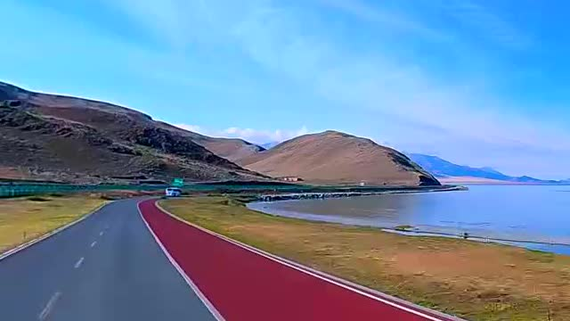

ONLINE ROOM / 2–5 RIDERS
赛里木湖，
全速开骑。
房主可设置总车手和 AI 数量。AI 补位后只剩 1 个真人席位时，你可以直接单人开赛。
赛湖车神赛湖破风之影
点击头像上传本地自定义照片或选择官方预设
房主可设置总车手和 AI 数量。AI 补位后只剩 1 个真人席位时，你可以直接单人开赛。
《暴力骑行 · 赛湖破风之影》为 3D 高速公路自行车竞速游戏，推荐在 1024×768 以上分辨率或将移动设备横屏游玩以获得完整视界与操作界面。